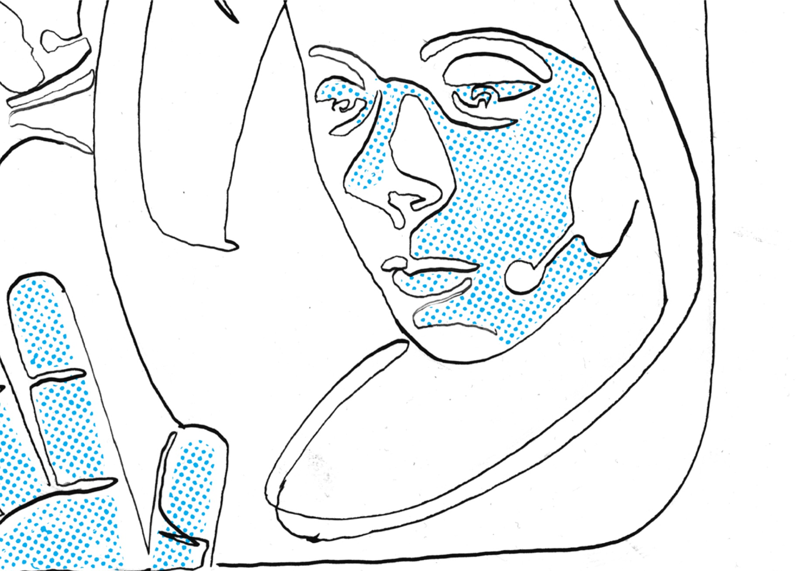
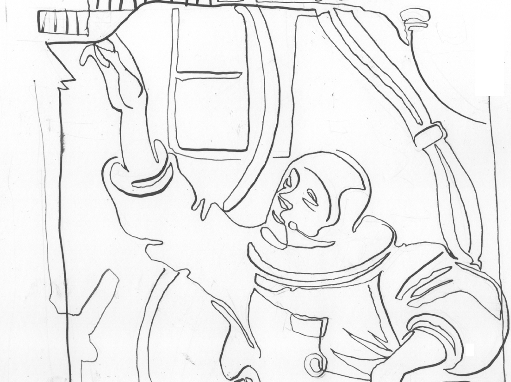

Det här projektet började inte med en färdig metod, utan med en känsla av utmaningar kring hur vi hittills har försökt ta oss an lärande. Hur mycket av det som kallas “kompetensutveckling” faktiskt designas och utformas - utan att något eller någon utvecklas. Över hur snabbt vi säger “livslångt lärande” – och hur sällan vi menar det på riktigt. Och framför allt: en stark känsla av att vi kan bättre. Att vi behöver bättre.
När regeringen startade sitt samverkansprogram för livslångt lärande 2019, var det i ett försök att bryta silos, samla perspektiv och skapa nya vägar framåt. Men det var också ett ovanligt öppet uppdrag: istället för att leverera policy eller pilotprojekt, skulle vi i arbetsgruppen Attityder, miljöer & incitament närma oss de svåraste, mest undflyende frågorna – de som handlar om kultur, känsla och klimat för lärande. Det osynliga. Det mellanmänskliga, det som avgör om lärande ens är möjligt.
Helena Sjöström, då vice vd på NOX Consulting och ordförande för gruppen, uttryckte det så här:
“Det var ett kittlande, intressant och lite modigt angreppssätt: att samla aktörer som normalt aldrig möts och lösa något som är svinsvårt.”
Att våga förändra
Och det var faktiskt modigt. Att jobba med lärandets djupstrukturer är att kliva rakt in i ett system som ofta motverkar just det man försöker skapa. Budgetlogik, effektivisering, krav på mätbarhet, tydliga mål och styrmodeller. Allt detta formar våra miljöer och incitament, vilket påverkar människors vilja och förmåga att lära. Det blev tydligt redan i våra första samtal att lärande inte bara handlar om individen, utan om hur vi bygger organisationer, relationer och system runt det lärandet.
Vi ville därför inte göra ännu ett projekt som bara skummade på ytan. Vi ville in i kärnan kring varför lärande ibland uppstår trots de här systemen – och vad som händer om och när vi börjar designa utifrån de drivkrafter vi kan se leder framåt. Inte med fokus på kursinnehåll eller kunskapsmål, utan på själva viljan att förstå, våga, minnas och fortsätta.
Forskare som Jessica Körning Ljungberg, Daniel Sörman och Elisabeth Åström förde in en tvärvetenskaplig grund i arbetet. Deras analys av vad som verkligen påverkar lärande landade i fyra grundläggande drivkrafter; nyfikenhet, inre motivation, psykologisk trygghet och framplockning. Samtidigt började praktiker som Mikael Ahlström entreprenör och community byggare bakom innovationshubben The Park, känna igen mönster från sina egna verktyg och processer:
“Vi hade itererat fram övningar i åratal – men först nu fattade jag varför de funkar. Grundkomponenterna är samma. Vi kan skruva på dem som EQ-reglar på ett mixerbord.”
Det blev snabbt tydligt att projektet inte bara skulle handla om lärande i snäv mening, utan även om identitet. Om självbild och om vilka vi är som människor, som medarbetare och som ledare. När 45 konsulter på NOX testade reflektionsverktyget Learnable och spelade in meddelanden till sina framtida jag, fick flera av dem en ny kontakt med sitt eget lärande. En annan typ av ansvar, en annan riktning.
I sitt arbete på Omställningsfonden som deltog i projektet, såg verksamhetsledaren Carina Wedin att inre driv är avgörande för att lyckas i en omställningsprocess och komma in i sitt nästa arbete. Det handlar om motivation och mod att ta nya steg. Lärande är lika viktigt, som att vara nyfiken, våga testa nytt och ta tillvara på de erfarenheter som gör det lättare att hitta nya möjligheter. Ofta är det just inre driv som gör att jobbsökare vågar byta bana och går vidare till nytt arbete, studier eller eget företagande, och är man öppen för lärande och utveckling har man också lättare att hitta nya vägar på arbetsmarknaden. Utan tvekan är nycklar till ett lyckat omställningsarbete.
Lek som förutsättning
I våra workshops och hackathons i projektet men också i vår övriga vardag, såg vi också något annat. Det var ofta först när vi bjöd in leken i det vi gjorde, som det verkligen lossnade. Inte lek som distraktion, utan som metod. Som den ingrediens som skapar öppenhet och tillit. I våra olika sammanhang blev det tydligt att de mest oväntade insikterna ofta kommer när strukturen lättar. När det finns plats för det ologiska, det ofärdiga och det experimentella. När vi vågar säga ”vi testar” - istället för ”vi bestämmer”.
Den tanken fick ytterligare djup i en intervju med Lina Emilsson, forskare i speldesign vid Uppsala universitet, som jobbar med att förstå neurala kretsar för lekfullhet och hur dessa i kombination med speldesign-principer kan bidra till bland annat lärande. Lina har länge studerat relationen mellan lek och lärande – särskilt i hur vuxna hanterar det okända och det kreativa:
“Lek är inte trams. Lek är att ta ansvar för sin kreativitet. Det är att tillåta mellanrum. Att prova saker som kanske inte funkar. Det är där nytt lärande bor.”
Och kanske var det just det som gjorde att projektet inte stannade vid att vara ett projekt. Utan blev ett språk och en gemenskap. Ett sätt att tänka – och känna – kring lärande. Därför kallar vi det för playbook och inte för en handbok, för vi tror inte att lärande bara kan styras genom instruktioner (och såna finns det redan gott om dessutom). Vi har inte skrivit en rapport, för vi vill inte avsluta någonting (men däremot flera värdefulla vetenskapliga artiklar).
Vi har velat skapa en inbjudan till att spela vidare. Att testa, skapa och lära i rörelse. Så vi pratar om playgrounds som trygga ytor att öva på. Playfields, där olika perspektiv får mötas. Playhouses, där vi testar nya roller. Och det här bara fortsätter. När du öppnar den här boken kliver du in i just en sådan plats. Det här kapitlet må berätta hur det började – men rörelsen pågår fortfarande. Och du är nu en del av den.

Intervju med Mikael Ahlström
Design som väcker vardagslärande
Mikael Ahlström är entreprenör och grundare av The Park, ett kreativt coworking-community som samlar människor, företag och idéer i gränslandet mellan innovation, kultur och hållbart företagande. Han har under lång tid verkat som en central kraft i det svenska startup-ekosystemet och arbetat med att bygga broar mellan näringsliv, utbildning och samhällsutveckling. Som styrelseledamot i Hyper Island är han djupt engagerad i frågor om framtidens lärande, ledarskap och entreprenöriellt mindset.
”För varje ny teknik, varje nytt fenomen, varje nytt användarbeteende – lärde man sig, och varje insikt öppnade tre, fyra nya möjligheter.”
Så beskriver Mikael Ahlström sina tidiga år som entreprenör. Hans bana sammanföll med internets genombrott, och där väcktes också övertygelsen om lärande som den största av konkurrensfördelar. Att förstå, reflektera och ligga nära utvecklingens takt blev för honom en nödvändighet, men också en drivkraft.
Från digitalisering till lärandedesign
I tre decennier har Mikael rört sig i korsningen mellan teknik, utbildning och mötesplatser. Han var med och byggde upp Icon Media Lab, grundade byråer och startups, och senare The Park – en plats som förenar coworking, accelerator och lärandemiljö. Genom grundandet av skolan Hyper Island har han sett hur välregisserade lärupplevelser kan förvandla människor.
”Man behövde inte vara på Hyper Island länge för att se kraften i väldesignade lärandeupplevelser. Hur snabbt människor utvecklas när innehåll, dramaturgi och känsla hänger ihop.”
Insikten blev att lärande inte är något som sker vid sidan av arbetet – utan i vardagen, i samtalen, i själva kulturen. Skillnaden mellan en miljö som bara fungerar och en miljö som skapar lärande, ligger i designen och hur ofta den miljön bjuder in till möten, reflektion och utveckling.
Irrelevans – glappet mellan värld och vardag
När Mikael satt i regeringens samverkansgrupp för kompetensförsörjning och livslångt lärande, fick han tillämpa de perspektiven i större skala. En fråga stod i särskilt fokus, den växande klyftan mellan hur snabbt världen förändras och hur långsamt organisationer anpassar sig.
”Så länge den externa utvecklingstakten är högre än den egna finns risken för ett gap – och det gapet kan beskrivas som irrelevans. Det gäller individer, team, bolag och hela nationer.”
Att försöka minska det glappet är enligt Mikael kärnan i livslångt lärande. Inte för att springa fortare, utan för att bli tryggare, mer nyfiken och redo för allt det oväntade framför oss.
Drivkrafter som går att designa
När forskarna i projektet Läran att lära identifierade de fyra centrala drivkrafterna för livslångt lärande – kände Mikael igen dessa direkt.
”Vi har länge jobbat praktiskt med design och metoder som fungerar, men utan att alltid förstå varför. Genom forskningen fick vi syn på de grundkomponenter som gör skillnaden. Och när man vet dessa, kan man också förstärka effekterna.”
Han beskriver det som att kunna justera lärande på samma sätt som ljudnivåer i en studio, lite mer trygghet här, mer nyfikenhet där, fler moment av framplockning eller annat. För Mikael handlar allt om att använda design istället för slump. Lust, engagemang och idéer uppstår inte av sig själva, de skapas av genomtänkta processer.
Learnable – att möta sig själv som mentor
Som förste forskningsingenjör i projektet fick han möjlighet att pröva alla de teoretiska insikterna i praktiken. Tillsammans med forskarna testade han självreflektion som verktyg för lärande, med hypotesen att reflektionen blir starkare när man gör den med sig själv som mentor.
”När man pratar med sig själv har man ingen annan agenda att ta hänsyn till. Det är bara din egen röst, dina egna mål. Då landar reflektionen djupare.”
’Prototypen de utvecklade bestod av en enkel videosekvens. Deltagare spelade in sig själva i början av en utbildning och svarade sedan på samma återkommande frågor under kursens gång. Reflektion upplevdes ofta som besvärlig innan man gjorde den – men befriande efteråt. Och att göra det med sig själv på skärmen kan vara ännu mer obekvämt, men också mer eftertänksamt. Många deltagare beskrev det just som att få hänga med sig själv som mentor och det tog ett tag att vänja sig vid det, intygar Mikael själv. Sedan projektet startade har utvecklingen inom AI och avatarer dessutom gått snabbt. Det innebär att frågan om hur tekniken bäst kan hjälpa människor att möta sig själva i lärandet på nya sätt, har utvecklats längs vägen.
Lärande som vardagsdesign
En annan del av arbetet har handlat om klimatet för lärande på arbetsplatser. På The Park har man undersökt hur livslångt lärande kan integreras i det dagliga arbetet. Mikael beskriver tre former av lärande som kompletterar varandra:
Det första är det vardagliga nätverkandet - korta samtal och reflektioner mellan kollegor.
Det andra är lärande genom upplevelser - besök, delegationer, gemensamma konferenser.
Det tredje är strukturerade utbildningsinslag - frukostseminarier, workshops och lärprogram.
”Utmaningen är inte att designa reflektionen, utan att designa utbildningar och andra insatser så att reflektion faktiskt sker. Alla säger att de borde reflektera mer – men få gör det, om det inte byggs in i processen.”
Därför menar han att det behövs fler som har mandat att skapa lärandeklimat i vardagen. Inte som något extra projekt, utan som en naturlig del av arbetet.
När Mikael Ahlström talar om lärande återkommer samma ord gång på gång: design. Det gäller miljöer, processer, incitament och reflektioner. Och det gäller själva vardagen. För honom är livslångt lärande inte ett format att boka, utan ett sätt att leva och arbeta.
”När lärandet blir en rytm i vardagen, krymper glappet mellan världen och oss själva. Då blir vi relevanta på riktigt.”
Playguide – designa för vardagslärande
Reflektion kräver design
Reflektion sker sällan spontant. Lägg den som en integrerad del av processen – inte som tillval vid sidan av.
Självreflektion fördjupar
När deltagaren pratar med sitt framtida jag blir reflektionen mer ärlig. Testa en enkel inspelning i början och slutet av ett program.
Mandat behövs
Ge lärandedesigners och utbildningsledare mandat att kräva tid och plats för reflektion. Annars trängs den alltid bort.
Tre lager av lärande
Vardagsnätverkande, upplevelsebaserat lärande och strukturerad utbildning behöver samspela. Ingen del räcker ensam.
Design som hållning
När mötesplatser, kurser och kulturer byggs med lärande som underliggande princip – då blir utveckling en del av vardagen, inte en separat aktivitet.
Learnable som plattform
Learnable – lärande med dig själv som mentor
Tänk om du kunde tala med ditt framtida jag – inte som en tankeövning, utan som en verklig dialog. Det var alltså utgångspunkten för Learnable, ett forskningsdrivet experiment som ville förstå hur reflektion kan bli en aktiv del av lärandet, snarare än en eftertanke.
Utvecklingen av Learnable föddes ur insikten om att reflektion är avgörande för lärande, men att ganska få ändå reflekterar strukturerat regelbundet och medvetet. Reflektion kräver utrymme, tid och ibland mod och dess betydelse är väl belagt i befintlig forskning. Frågan forskarna och designteamet här ställt sig är därför inte om reflektion fungerar, utan hur man får den att hända. Den behöver vara inbyggd, organiserad och ha en struktur för att ske.
Resultatet blev ett digitalt verktyg där reflektionen byggs in i själva lärprocessen, inte som en frivillig uppgift utan som ett naturligt moment. I början av en utbildning eller kurs möter du som deltagare ditt eget framtida jag, genom korta videoinspelningar. Tre frågor som du ställer till dig själv, blir startpunkten för en läranderesa som dokumenteras, speglas och följs upp. När du återkommer till inspelningen under kursens gång blir reflektionen en verklig dialog, med dig själv som mentor.
Tekniken i Learnable är enkel, men designen är noga uttänkt med forskning i ryggen. Varje sekvens är framtagen för att minimera trösklar; att starta en inspelning tar sekunder, inga appar behöver laddas ner, och upplevelsen är intuitiv. Verktyget samlar sedan deltagarnas reflektioner och låter dem se sin egen progression över tid. För forskarna i projektet blev detta också ett sätt att mäta hur psykologisk trygghet, motivation och attityder till lärande förändras under resans gång.
Den mest intressanta effekten låg inte i tekniken i sig, utan i vad den möjliggjorde. När reflektionen gjordes inför kameran med sig själv som samtalspartner, skedde något på djupet. De som testade beskrev ofta upplevelsen som först obekväm - men sen oväntat effektfull. Den egna rösten, ansiktet och blicken fungerade som en spegel där det inte gick att gömma sig bakom ytliga eller ihåliga svar. Det blev en personlig, påtaglig form av reflektion, en sorts inre loop som landade annorlunda än text eller gruppdiskussioner.
När samtalet med det egna framtida jaget på så sätt blir mer responsivt, kan reflektionen bli både kontinuerlig och skalbar. I stället för att reflektionen sker vid ett kursslut, kan den vävas in som små interaktioner löpande i vardagen. Ett “hur tänkte jag här?” mellan två möten, eller ett snabbt samtal med sig själv efter ett beslut.
I grunden är Learnable en prototyp för att utforska hur teknik kan förstärka mänsklig närvaro i lärandet, snarare än ersätta den. Genom att använda AI och så småningom kanske även digitala karaktärer, finns idag potential att skapa individualiserade mentorer - tränade på användarens egna uttryck, språk och reflektioner. Det är något projektet också intresserat sig för att fortsätta utforska, testerna har här också lett fram till en kommande forskningsartikel.
Learnable är därmed inte ett nytt utbildningsformat eller ett LMS (Learning Management System), utan ett sätt att med utgångspunkt i olika premisser, tänka kring lärande i grunden. Det innebär att
Att varje individ bär sin egen mentor inom sig
Att tekniken kan förstärka självinsikten
Att reflektion är en kompetens – inte en paus.
När lärande designas med reflektion som kärna skapas också nya datamönster. I Learnable gavs forskarna möjlighet att följa hur motivation förändras, hur trygghet byggs och hur det egna språkbruket utvecklas under en utbildning. Det öppnar för något större än kursutvärderingar, för en en förståelse för hur människor faktiskt lär, växer och förändras.
I framtiden kan samma princip tillämpas långt bortom utbildning; i medarbetarsamtal, ledarskapsprogram, introduktionsprogram och i vardagligt lärande på arbetsplatser. Tekniken finns redan där, men det som gör den meningsfull är fortfarande det mänskliga samtalet, även det med dig själv. Learnable visar att reflektion inte måste vara stillhet eller efterklokhet. Den kan också vara ett rörligt digitalt möte med dig själv, designat för att väcka lärandet som redan finns där inuti.

Intervju Jannie Jeppesen
Motivation och mänskligt lärande
Jannie Jeppesen är vd för Swedish Edtech Industry, branschorganisationen som samlar företag och aktörer inom lärande och digitalisering. Hon har en bakgrund som rektor, lärare och skolledare och har under många år arbetat för att skapa bättre förutsättningar för lärande genom teknik, pedagogik och samverkan mellan offentlig sektor och edtech-branschen. Jannie är en drivande röst i det nationella samtalet om framtidens utbildning och digital kompetens, med fokus på hur teknik kan stärka likvärdighet, tillgänglighet och lärande på riktigt.
”Digitalisering, AI och lärplattformar må förändra våra verktyg, men inte vår natur.”
För Jannie Jeppesen, vd för branschorganisationen Swedish Edtech Industry, är det mänskliga lärandet i grunden detsamma som det alltid har varit. Smärtsamt, motiverande och djupt beroende av mening.
Swedish Edtech Industry* samlar svenska företag som utvecklar teknologi för utbildning och lärande – från schemaläggningssystem till VR-lösningar och lärplattformar. Organisationen arbetar med kvalitet och utveckling inom en sektor som blivit central för allt från skola till kompetensförsörjning i näringslivet.
Men bakom teknikens expansion finns en gemensam kärna: frågan om hur vi lär, och varför.
Tekniken förändrar verktygen – inte människan
Sverige har flera decennier lång erfarenhet av digitalt lärande. Redan på 1980-talet fanns programmering i skolan, och vid millennieskiftet slog e-learning igenom på bred front i näringslivet. Ändå menar Jannie att vi ofta missförstår själva begreppet digital transformation. Vi har digitaliserat fler processer och verktyg än någonsin, men det mänskliga lärandet i sig är oförändrat. Det följer samma grundläggande logik som alltid: att förstå, försöka, misslyckas, försöka igen – och till slut bemästra. Teknologin kan utmana vad vi lär och hur vi organiserar lärandet, men den förändrar inte hur hjärnan lär.
“Pennan revolutionerade inte tänkandet, den bara möjliggjorde nya uttryck och hur vi kunde använda hjärnan. Detsamma gäller datorn och AI. Tekniken är ett verktyg, inte en ersättning för det mänskliga lärandet. Det är lätt att tro att teknik förändrar oss som människor, men den gör bara vår mänsklighet mer synlig.”
Motivationens dubbelhet
Det som intresserar Jannie mest är därför inte tekniken i sig, utan motivationen bakom lärandet. Hon beskriver den som något djupt mänskligt, ofta en blandning av lust och motstånd. Att lära sig något nytt kräver först att man erkänner att man inte kan, en insikt som kan vara både sårbar och befriande. För vissa utgör just det motståndet blandat med lust en utmaning, för andra blir det ett rent hinder. Därför handlar lärandets design lika mycket om att bygga psykologisk trygghet, som om att skapa engagemang.
Jannie har sett det ske både i klassrummet och i näringslivet, vad som sker när brist på tilltro till den egna förmågan blir en av de största spärrarna mot lärande.
“Många sabbar hellre för sig själva än riskerar att verka okunniga. Det är mänskligt, men förödande om vi inte vågar stå kvar i det vi ännu inte kan.”
Hon menar att pedagogiken – oavsett om den sker i en skola eller på arbetsplats – måste rikta sitt fokus mot att skapa trygghet nog för att våga känna sig okunnig.
Från klassrum till branschledning
Jannie började som lärare i grundskolan, gick vidare till skolledare och utvecklingsledare, och sedan åtta år leder hon organisationen Swedish Edtech Industry. I grunden ser hon fortfarande sig själv som någon som arbetar med skolutveckling, men nu på nationell nivå.
Hon har också suttit i regeringens samverkansprogram för kompetensförsörjning och livslångt lärande, med särskilt ansvar för digital infrastruktur. Det låter som en teknisk roll, men för henne är infrastrukturen för lärande alltid både mänsklig och digital. Teknologin blir bara meningsfull när den stärker användarens upplevelse, motivation och möjlighet att utvecklas.
När företag designar lärande
Inom projektet Läran att lära deltog Jannie som representant för branschen. Swedish Edtech Industry samlade omkring fyrtio personer från sina medlemsföretag till workshops med våra forskare. Tillsammans utforskade de hur projektets drivkrafter för lärande kan omsättas i praktiken, när man designar digitala lärandeupplevelser. Resultatet bekräftade mycket av det branschen redan sett - att design för lärande är mer än UX och gränssnitt. Det handlar om att skapa meningsfulla, trygga och motiverande upplevelser, oavsett målgrupp.
“Människor lär sig inte av funktioner, de lär sig av upplevelser. Och det gäller även i digitala miljöer.”
Många av edtech-företagens medarbetare har bakgrund som lärare, vilket gör att de bär med sig djup pedagogisk kompetens in i produktutvecklingen. På arbetsplatser hittar vi inte sällan beteende- eller personalvetare bakom initiativen att skapa lärande och utbildning för medarbetare.
Relevans, inte format
När Jannie talar om lärande, återkommer hon om och om igen till ett ord. Relevans. Det gäller både i klassrummet och på arbetsplatsen. På företagsnivå mäts lärande ofta i effektivitet och avkastning, men sambandet mellan en kurs och faktisk utveckling är svårt att bevisa
“Många pratar om vad lärandet ska vara, men för få frågar varför. När vi hittar svaret på det, väcks motivationen.”
Utbildningar blir ofta frikopplade från vardagen, och därmed från motivationen. När lärandet däremot kopplas till verkliga uppgifter, behov och mål uppstår mening. Det är då “learning in the flow of work” – lärande i arbetsflödet – får sitt värde.
Det handlar inte om att lägga till ännu en kurs eller ett nytt system för kurser, utan om att synliggöra det lärande som redan sker varje dag. Alla lär sig ständigt på jobbet, men sällan medvetet, synliggjort eller verbaliserat. Lärandet saknar språk och struktur. Att göra det synligt är första steget mot att stärka både individens motivation och organisationens förmåga att utvecklas.
Teknikens roll
För Jannie är tekniken varken lösningen eller problemet. Den är en möjliggörare, men bara om man vet vad den ska möjliggöra. Teknik kan förstärka lärandet genom att visualisera, konkretisera och göra framsteg synliga. Den kan skapa snabb återkoppling och hjälpa människor att förstå sin egen utveckling. Men den kan också bli ett hinder om den inte används med syfte och medvetenhet.
“Det finns ingen app som ersätter tillit. Tekniken kan stödja lärande, men aldrig bära det.”
Hon varnar för att stapla lösningar på varandra utan att reflektera över vad som ska bort. En hållbar lärandestrategi kräver balans mellan digitalt och analogt, mellan effektivitet och mänsklig närvaro. Det ena får inte ersätta det andra, de måste samverka i ett ekosystem där motivation, engagemang och behov står i centrum.
Playguide – designa för motivation, relevans och mod
Lärande är inte alltid lustfyllt
Acceptera att lärande ofta börjar i motstånd. Designa processer som gör det tryggt att känna sig okunnig.
Bygg tillit före tempo
Självförtroende är bränslet i lärandet. Utan psykologisk trygghet riskerar motivationen att bytas mot undvikande.
Gör lärandet relevant
Knyt varje moment till verkliga behov, uppgifter eller mål. “Varför ska vi göra det här?” ska alltid ha ett konkret svar.
Synliggör det lärande som redan sker
Det mesta lärandet händer i vardagen. Hjälp människor att se och reflektera över sin egen utveckling – inte bara över kursinnehåll.
Använd teknik som förstärker, inte ersätter
Teknologin ska tydliggöra framsteg, skapa överblick och minska trösklar – inte ersätta mänsklig närvaro eller reflektion.
Våga ta bort
För varje ny plattform eller process, ställ frågan: vad ska vi sluta göra? Lärandets ekosystem växer när det blir enklare, inte tyngre.
Se lärande som infrastruktur
Behandla kompetensutveckling som en samhällskritisk funktion. Det kräver långsiktighet, inte kvartalsmål.